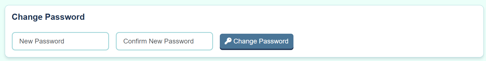

Welcome to the Volunteer Management System Documentation
Your complete guide to using, managing, and getting the most out of the VMS platform.
Common Questions
How do I change my password?
- Go to the Admin Dashboard (requires appropriate permissions).
- Find the Change Password section.
- Enter your new password and confirm it.
- Click the Change Password button.

You can find this section in the Admin Dashboard page (admin.html template).